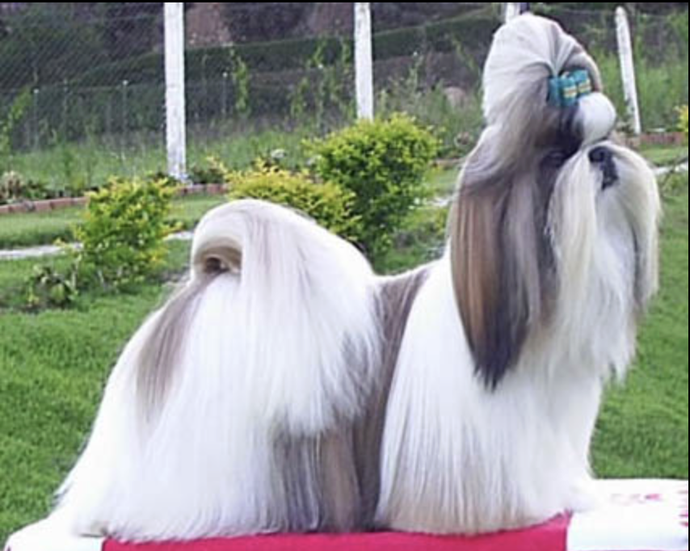

This website is specially created to show my love for Shih Tzu dogs. They are cute, friendly, and full of positive energy. Here you can see my favorite moments and learn about this beautiful breed.
Shih Tzus are small companion dogs that were originally bred in China. They are known for their long silky hair, sweet nature, and strong bonding with their owners.
They love attention, enjoy playing, and are perfect for families and apartment living. With proper care and love, they become lifelong friends.